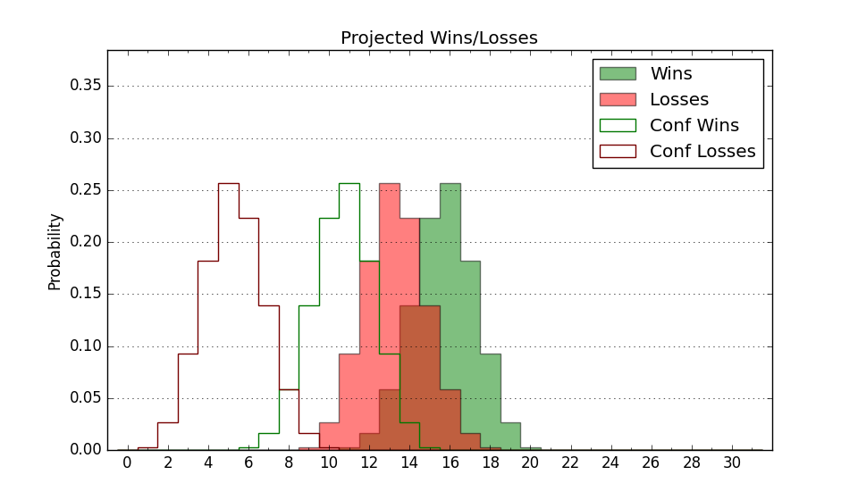

| Home | Game Probabilities | Conferences | Preseason Predictions | Odds Charts | NCAA Tournament |
| City: | Teaneck, New Jersey | |
| Conference: | Northeast (1st)
| |
| Record: | 5-1 (Conf) 10-9 (Overall) | |
| Ratings: | Comp.: -13.7 (316th) Net: -13.4 (314th) Off: 102.2 (160th) Def: 115.6 (355th) SoR: 0.0 (184th) |
| Remaining | ||||||
|---|---|---|---|---|---|---|
| Date | Opponent | Win Prob | Pred. | |||
| 1/22 | Stonehill (317) | 64.9% | W 80-75 | |||
| 1/26 | St. Francis PA (310) | 61.9% | W 82-79 | |||
| 1/28 | @ Merrimack (343) | 45.4% | L 67-69 | |||
| 2/4 | Wagner (315) | 64.8% | W 74-70 | |||
| 2/9 | @ LIU Brooklyn (363) | 72.9% | W 86-78 | |||
| 2/11 | Central Connecticut (342) | 73.9% | W 78-71 | |||
| 2/16 | @ Sacred Heart (332) | 40.6% | L 79-82 | |||
| 2/18 | @ Wagner (315) | 35.1% | L 70-74 | |||
| 2/23 | @ St. Francis PA (310) | 32.3% | L 78-83 | |||
| 2/25 | St. Francis NY (350) | 78.4% | W 79-70 | |||
| Previous | Game Score | |||||
| Date | Opponent | Win Prob | Result | Off | Def | Net |
| 11/7 | @Loyola Chicago (243) | 21.4% | L 82-88 | -1.2 | 10.0 | 8.8 |
| 11/13 | Manhattan (325) | 67.5% | W 77-74 | -6.9 | 7.2 | 0.3 |
| 11/18 | (N) SIU Edwardsville (188) | 21.6% | L 78-79 | 2.3 | 6.8 | 9.1 |
| 11/19 | @Longwood (140) | 9.6% | L 83-99 | 25.5 | -28.0 | -2.5 |
| 11/20 | (N) VMI (330) | 55.0% | W 93-89 | 14.8 | -9.1 | 5.7 |
| 11/22 | @Pittsburgh (70) | 4.2% | L 61-83 | -6.2 | 4.9 | -1.3 |
| 11/27 | @Saint Peter's (335) | 40.9% | L 63-77 | -7.7 | -12.9 | -20.5 |
| 11/30 | @Hartford (362) | 70.7% | L 66-74 | -19.2 | -5.3 | -24.5 |
| 12/3 | @Saint Joseph's (229) | 19.5% | W 97-80 | 29.3 | 7.2 | 36.4 |
| 12/9 | @Columbia (345) | 46.8% | W 76-73 | -6.8 | 15.1 | 8.2 |
| 12/11 | NJIT (309) | 61.4% | W 73-71 | -7.3 | 1.3 | -6.0 |
| 12/13 | @Richmond (119) | 7.7% | L 48-77 | -20.1 | 3.4 | -16.7 |
| 12/22 | Queens (220) | 42.3% | L 73-82 | -10.6 | 3.4 | -7.2 |
| 12/29 | Merrimack (343) | 73.9% | W 71-63 | -2.1 | 3.1 | 0.9 |
| 1/5 | @St. Francis NY (350) | 51.6% | W 76-57 | 5.0 | 18.0 | 23.1 |
| 1/7 | LIU Brooklyn (363) | 90.2% | W 101-89 | 6.2 | -14.6 | -8.5 |
| 1/14 | @Central Connecticut (342) | 45.4% | W 88-80 | 14.1 | 3.3 | 17.5 |
| 1/16 | @Stonehill (317) | 35.1% | W 65-57 | -2.6 | 20.6 | 18.0 |
| 1/20 | Sacred Heart (332) | 70.0% | L 85-92 | -0.4 | -18.8 | -19.2 |
| Stats & Trends | |||||
|---|---|---|---|---|---|
| Current | Day | Week | Month | Season | |
| Composite | -13.7 | -0.2 | -0.7 | +1.2 | +4.2 |
| Comp Rank | 316 | -2 | -7 | +11 | +35 |
| Net Efficiency | -13.4 | -0.2 | -0.9 | +0.6 | -- |
| Net Rank | 314 | -3 | -9 | -3 | -- |
| Off Efficiency | 102.2 | -0.1 | -0.8 | +0.2 | -- |
| Off Rank | 160 | -5 | -23 | +5 | -- |
| Def Efficiency | 115.6 | -0.1 | -0.0 | +0.4 | -- |
| Def Rank | 355 | +1 | +3 | +5 | -- |
| SoS Rank | 360 | -2 | -4 | -75 | -- |
| Exp. Wins | 15.7 | -0.0 | -0.3 | +1.7 | +6.4 |
| Exp. Conf Wins | 10.7 | -0.0 | -0.3 | +2.0 | +4.5 |
| Conf Champ Prob | 45.6 | +0.3 | -5.9 | +28.3 | +42.1 |

| Advanced Stats | ||
|---|---|---|
| Stat | Value | Rank |
| Off Eff FG % | 0.488 | 234 |
| Off Ast Ratio | 0.123 | 269 |
| Off ORB% | 0.260 | 205 |
| Off TO Rate | 0.151 | 87 |
| Off FT Ratio | 0.278 | 282 |
| Def Eff FG % | 0.601 | 363 |
| Def Ast Ratio | 0.174 | 352 |
| Def ORB% | 0.311 | 303 |
| Def TO Rate | 0.172 | 118 |
| Def FT Ratio | 0.335 | 237 |